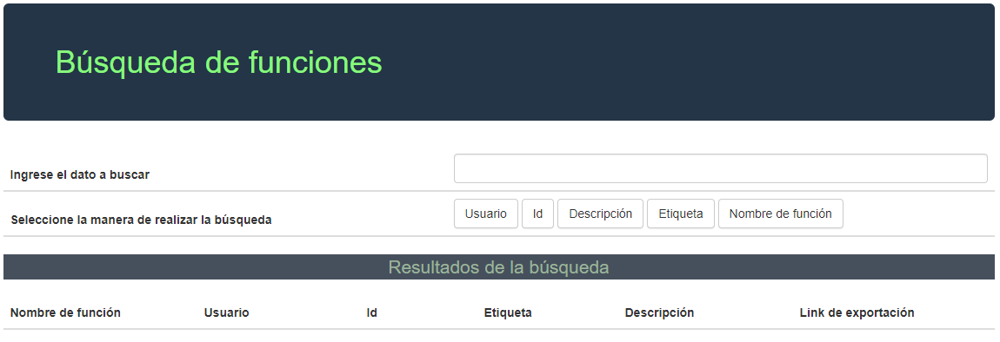
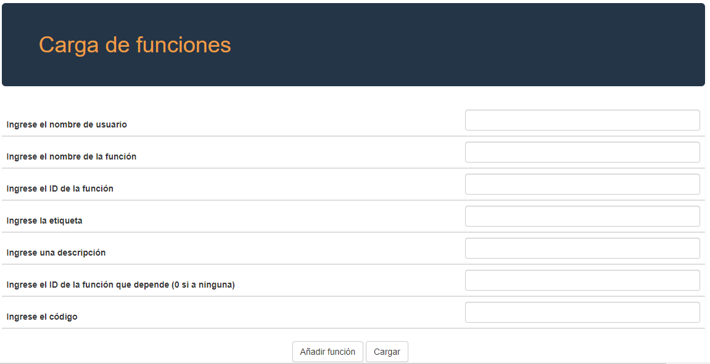

Para la busqueda de funciones
Si deseas buscar una función ya existente:
1. Ingresa el dato a buscar en el espacio correspondiente
2. Selecciona la manera en la que se quiera buscar la funciòn dentro de la base de datos
Ya sea por: Usuario, id, descripcion, etiqueta o el nombre de la funciones
3. Una vez realizada su búsqueda el sistema le mostrá la función encontrada según el termino de búsqueda definido

Para la carga de funciones
Si lo que deseas es guardar/cargar funciones a la base de datos:
1. Debes completar los siguientes datos: nombre de usuario, el nombre de la función, el ID de la funcióm, la etiqueta, una descripción, el ID de la función a la que depende y el código de la función a crear.
2. "Añador función" añadirá la función ya específica, sin embargo puedes cargar nuevos datos si deseas cargar mas funciones
3. Una vez creadas las funciones que deseas el botón "Cargar" cargará todas las funciones creadas a la base de datos.